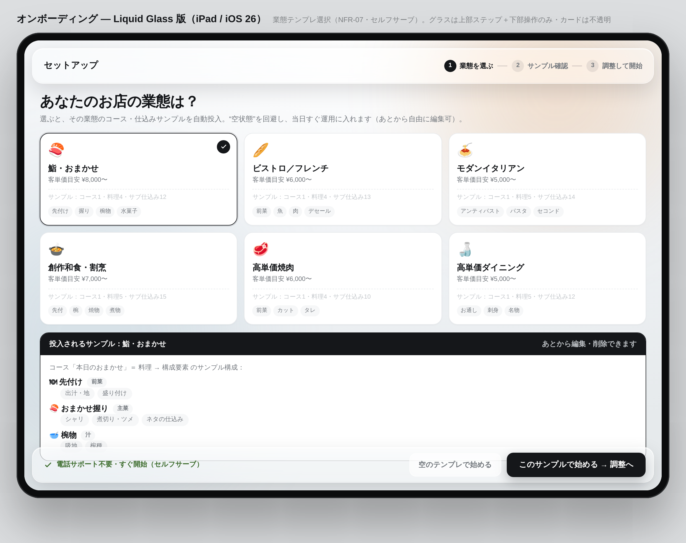
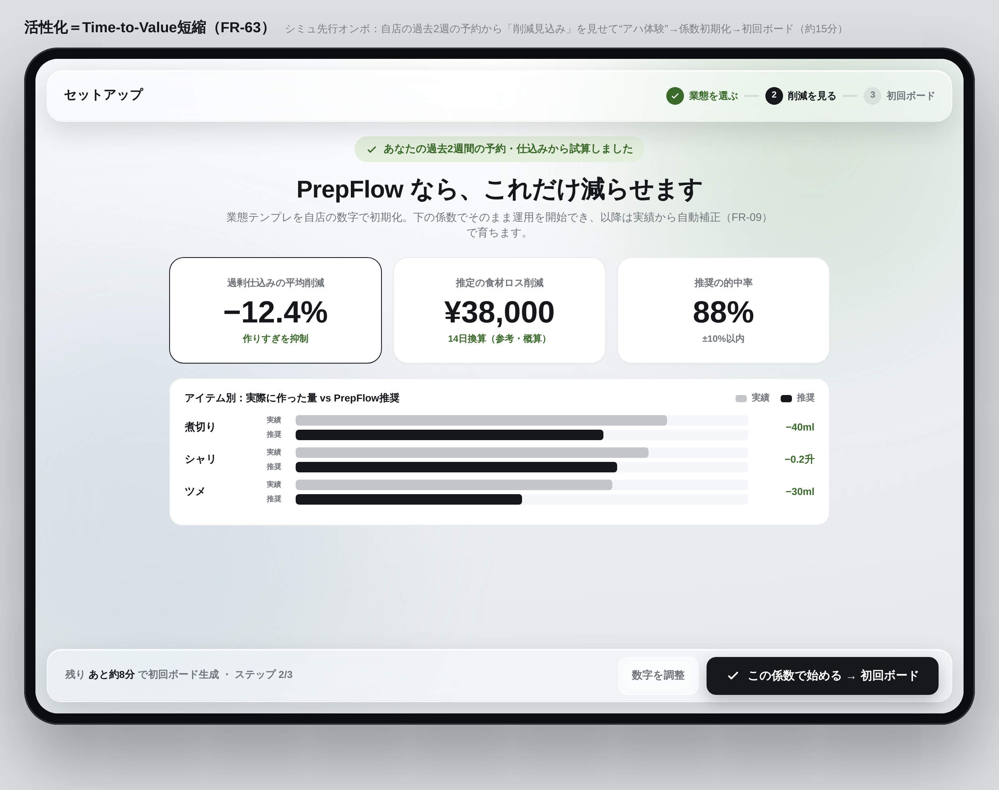
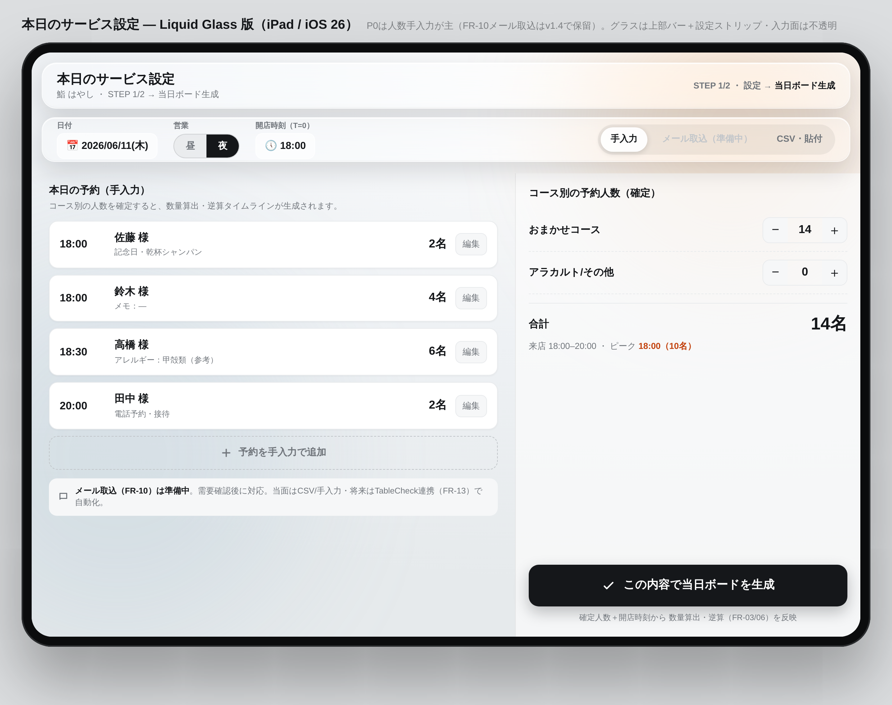
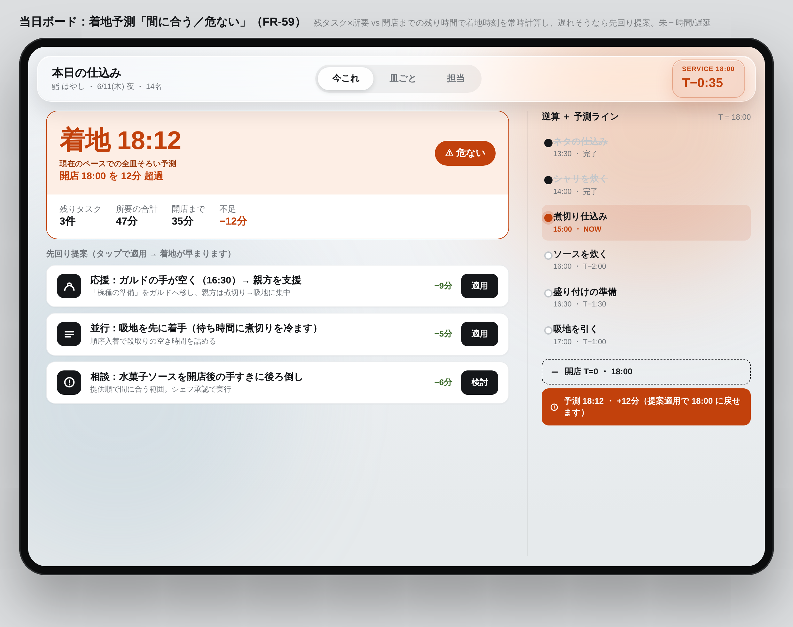
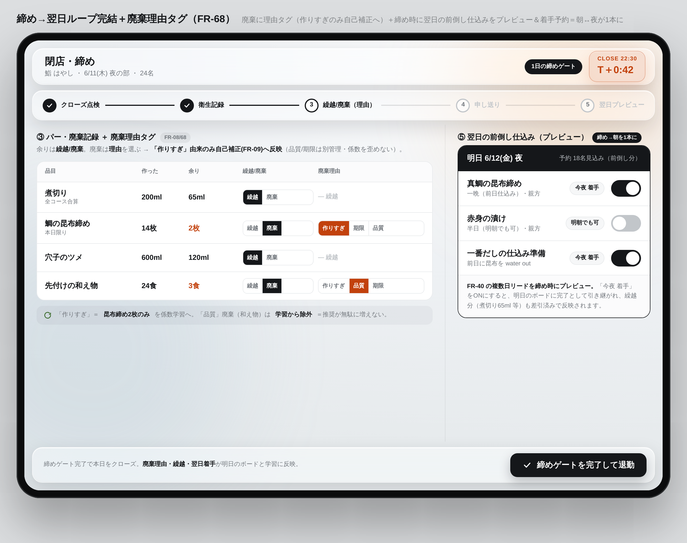

PrepFlow — 縦ぎりスライス確定ワイヤーをつないだエンドツーエンドの通し動線（フロー）・iOS Liquid Glass
機能を横に並べるのではなく、1本の価値の流れを縦に貫いて見る。各矢印は画面間で渡るデータ。下段は同じ流れを支える Engine（純Swift）の関数パイプライン。
A導入スライス（一度きり）空状態を作らず、“価値を見せてから”始める ＝ 活性化（FR-63）

1オンボーディング
業態を選ぶ
鮨/ビストロ等を選ぶとコース・仕込みサンプルを自動投入。空テンプレ問題を回避。
NFR-07 ・ サンプル投入
業態テンプレ
＋過去2週の予約
＋過去2週の予約

2活性化サマリー
自店の削減見込みを見る
過去2週の予約から「−12.4%／¥38,000／的中88%」を提示。“アハ体験”。
FR-63/39 ・ 係数を初期化
初期化した係数
（1人前量）
（1人前量）

3初回ボード生成
そのまま日次運用へ
約15分で「今日の仕込み」が立ち上がる。以降は下のBループを毎日くり返す。
FR-04 ・ → 日次スライスへ
B日次運用スライス（毎日くり返す）予約 → 仕込み → 先回り → 営業 → 締め → 翌日 ＝ 1本の T− 軸

1サービス設定
人数を確定
コース別人数と開店(T0)を確定。P2では予約ハブ(FR-34)に昇格・複数ソース合算。
FR-02 ・ 14名 / T0 18:00
確定covers
＋開店時刻
＋開店時刻
2仕込みボード「今これ」
数量・逆算で仕込む
人数×係数÷歩留りで数量、T0逆算で着手時刻。タップでロールアップ。
FR-03/05/06 ・ 数量・着手時刻
俯瞰の分岐：皿ごと（FR-04/05）／担当（FR-07）に切替可
残タスク×所要
vs 開店まで
vs 開店まで

3着地予測
「間に合う／危ない」
現在ペースの着地時刻を常時計算。遅れそうなら応援/並行/後ろ倒しを先回り提案。
FR-59 ・ 18:12→提案で18:00
開店 → 営業
（提供・パー減）
（提供・パー減）

4締め → 翌日
廃棄理由＋前倒し予約
繰越/廃棄(理由)を記録→自己補正へ。翌日の前倒し仕込みを今夜トグルで予約。
FR-33/68/08 ・ 繰越・今夜着手
繰越差引
＋係数補正
＋係数補正
翌日へ繰越・前倒し・
育った係数を反映
育った係数を反映
同じ流れを支える Engine（純Swift・I/Oなし・golden test）＝「縦ぎりスライス」の技術版：UIを剥いだ1本のデータ変換architecture.md §3
covers確定人数（FR-02/34）
calcQty / aggregate数量・サブレシピ合算（FR-03/37/38）
scheduleT0逆算・prep_day（FR-06/40/41）
rollup子全完了→親（FR-05）
etaProjection着地予測・遅延（FR-59）
diffPlan追い仕込み/減算（FR-19/34/55）
WasteLog作った/余った＋理由（FR-08/68）
selfCorrect係数を補正（FR-09）
applyCarryover翌日へ差引（FR-42）
→ 翌日 coversループ（育った係数）
朱＝時間/着地予測/ループ
各関数は引数で受けて値を返すだけ＝オフラインでもオンデバイスで動く（NFR-01）
テスト期待値は確定ワイヤーの数値（煮切り200ml/残65ml 等）＝golden/*.json